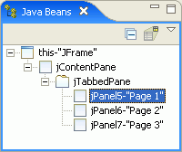

To create a notebook of tabbed pages, you can use the Swing JTabbedPane (javax.swing.JTabbedPane).
When you drop a component onto a JTabbedPane, the component becomes a new tabbed page. The component is also shown in the Java Beans view as a child of the JTabbedPane. Only one of the pages is the active page that you can select in the Design view and work with.

- To change the active page in the Design view, you can right-click the
JTabbedPane and select a page using the Switch To option.
You can also switch selection to a different page by selecting the page's
component in the Java Beans view.

- To change the tabbed page's title, its icon, or its tool tip, select the
component and change the values in the Properties view.
- To reorder the tabbed pages, in the Java Beans view drag and drop the component to the new position in the JTabbedPane.